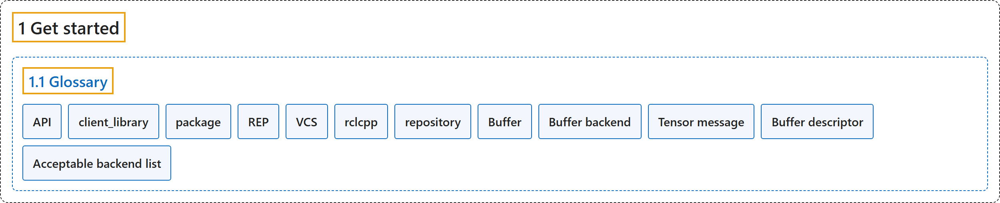

1.1 Glossary
Classification

Glossary
| Term | Definition | 中文翻译 | Source |
|---|---|---|---|
| 1.1 Glossary 术语表 |
"This article provides a glossary of commonly used ROS terms, helping you understand key definitions and follow related documentation more easily." | 本文提供一份 ROS 常用术语的词汇表，帮助你理解关键定义，更容易读懂相关文档。 | Open Robotics, n.d., "Glossary", para. 1 |
| API API |
"An API, or Application Programming Interface, is an interface that is provided by an “application”, which in this case is usually a shared library or other language appropriate shared resource." | API（应用程序编程接口）是由一个“应用”提供的接口，这里的“应用”通常是一个共享库或其他适合该语言的共享资源。 | Open Robotics, n.d., "API" |
| client_library 客户端库 |
"A client library is an API that provides access to the ROS graph using primitive middleware concepts like Topics, Services, and Actions." | 客户端库是一种 API，它用话题、服务和动作等基本中间件概念来访问 ROS 图。 | Open Robotics, n.d., "client_library" |
| package 软件包 |
"A single unit of software, including source code, build system files, documentation, tests, and other associated resources." | 一个单独的软件单元，包括源代码、构建系统文件、文档、测试和其他相关资源。 | Open Robotics, n.d., "package" |
| REP REP（机器人增强提案） |
"Robotics Enhancement Proposal. A document that describes an enhancement, standardization, or convention for the ROS community." | 机器人增强提案。一份描述 ROS 社区的增强、标准化或约定的文档。 | Open Robotics, n.d., "REP" |
| VCS 版本控制系统 |
"Version Control System, such as CVS, SVN, git, mercurial, etc…" | 版本控制系统，如 CVS、SVN、git、mercurial 等。 | Open Robotics, n.d., "VCS" |
| rclcpp rclcpp |
"The C++ specific Client Library for ROS." | ROS 的 C++ 专用客户端库。 | Open Robotics, n.d., "rclcpp" |
| repository 仓库 |
"A collection of packages usually managed using a VCS like git or mercurial and usually hosted on a site like GitHub or BitBucket." | 软件包的集合，通常用 git 或 mercurial 等 VCS 管理，通常托管在 GitHub 或 BitBucket 等网站上。 | Open Robotics, n.d., "repository" |
| Buffer 缓冲区 |
"rosidl::Buffer |
rosidl::Buffer |
Open Robotics, n.d., "Buffer" |
| Buffer backend 缓冲区后端 |
"A pluginlib plugin, implementing the rosidl::BufferBackend interface, that teaches the RMW how to transport a rosidl::Buffer whose storage lives in a vendor-specific memory domain (for example, GPU memory)." | 一个 pluginlib 插件，实现 rosidl::BufferBackend 接口，告诉 RMW 如何传输存储在厂商专用内存域中的 rosidl::Buffer（例如 GPU 内存）。 | Open Robotics, n.d., "Buffer backend" |
| Tensor message 张量消息 |
"A normal ROS 2 message, such as tensor_msgs/msg/ExperimentalTensor, that carries tensor metadata and stores the raw tensor bytes in a uint8[] field backed by rosidl::Buffer." | 一种普通的 ROS 2 消息，如 tensor_msgs/msg/ExperimentalTensor，它携带张量元数据，并把原始张量字节存放在由 rosidl::Buffer 支撑的 uint8[] 字段中。 | Open Robotics, n.d., "Tensor message" |
| Buffer descriptor 缓冲区描述符 |
"A normal ROS 2 .msg produced by a BufferBackend that travels on the wire in place of the raw uint8[] contents of a buffer-backed field." | 由 BufferBackend 生成的一种普通 ROS 2 .msg，在传输线路上代替缓冲区支撑字段的原始 uint8[] 内容。 | Open Robotics, n.d., "Buffer descriptor" |
| Acceptable backend list 可接受后端列表 |
"A comma-separated list of backend names the subscription is willing to receive; "cpu" (or empty) means CPU-only, "any" means any installed backend, and CPU is always implicitly acceptable." | 一个用逗号分隔的后端名称列表，列出订阅愿意接收的后端；"cpu"（或空）表示只用 CPU，"any" 表示任何已安装的后端，CPU 总是隐含可接受。 | Open Robotics, n.d., "Acceptable backend list" |
References
Open Robotics. (n.d.). Glossary. ROS 2 Documentation: Lyrical. Retrieved October 31, 2026, from https://docs.ros.org/en/lyrical/Get-Started/Glossary.html